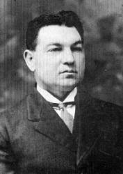
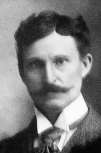

|
|
颂主新歌 |
|
1 I was sinking deep in sin, Refrain: 2 All my heart to Him I give, 3 Souls in danger, look above, |
1.我远离平安之岸，沉溺罪中漂荡， |
|
https://www.mred365.cn/szxg/7253.html
|
|
|
|
|


https://www.mred365.cn/uploads/soft/200425/33-200425215R7.mp3 -
愛救贖我(LOVE LIFTED ME) 傳統詩歌國語字幕演唱 https://youtu.be/fkwrwlazkgs -
Kim Hopper - Official Video for “Love Lifted Me (Live)"
https://youtu.be/YbE3Rmfhtz4 -
Love Lifted Me · Kenny Rogers
https://youtu.be/XP_Zk7AI0mkhttps://youtu.be/XP_Zk7AI0mk
| Text: | Love Lifted Me |
| Author: | James Rowe |
| Tune: | SAFETY |
| Composer: | Howard E. Smith |
| Short Name: | James Rowe |
| Full Name: | Rowe, James, 1865-1933 |
| Birth Year: | 1865 |
| Death Year: | 1933 |
Pseudonym: James S. Apple.

James Rowe was born in England in 1865. He served four years in the Government Survey Office, Dublin Ireland as a young man. He came to America in 1890 where he worked for ten years for the New York Central & Hudson R.R. Co., then served for twelve years as superintendent of the Mohawk and Hudson River Humane Society. He began writing songs and hymns about 1896 and was a prolific writer of gospel verse with more than 9,000 published hymns, poems, recitations, and other works.
Dianne Shapiro, from "The Singers and Their Songs: sketches of living gospel hymn writers" by Charles Hutchinson Gabriel (Chicago: The Rodeheaver Company, 1916)
Tune Information
| Title: | SAFETY (Smith) |
| Composer: | Howard E. Smith (1912) |
| Meter: | 7.6.7.6.7.6.7.4 with refrain |
| Incipit: | 56535 65567 12767 |
| Key: | B♭ Major |
| Copyright: | Public Domain |
| Short Name: | Howard E. Smith |
| Full Name: | Smith, Howard E., 1863-1918 |
| Birth Year: | 1863 |
| Death Year: | 1918 |

我曾陷溺罪海中，遠離了安全港，被罪惡壓身深重，心中痛苦失望；
幸蒙萬有大主宰，聽我哭喊之聲，恩手救我離苦海，免我沉淪。
我今願獻身心靈，跟隨救主到底，我願讚美主聖名，在祂懷中安息；
主的愛廣大真誠，我靈歌唱不停，願向主忠心事奉，聽祂命令。
當你遇危險災害，應當仰望救主，祂有恩典與大愛，必定拯救幫助；
祂是海洋大主宰，風浪聽祂命令，祂今願意你悔改，拯救你命。
（副歌）
主愛救我，主愛救我；當我灰心絕望，主愛救我。
主愛救我，主愛救我；當我灰心絕望，主愛救我。
(請點耳機收聽)
在陷溺罪海中，主愛救我；在痛苦絕望中，主愛救我。
羅雅各（James Rowe, 1865-1933）在1912年寫了一首詩，思忖也許可以當作福音詩歌，他就請他的朋友風琴師史豪華（Howard
Smith,1863-1918）來家一聚。 他們邊彈邊唱，互相斟酌，終於完成了這首「主愛救我」。
羅雅各出生在英國，廿五歲遷居美國，初在鐵路工作， 繼在人文協會任督導，最後決定從事文字工作。
他為數家著名的音樂出版社創作詩歌和編審音樂雜誌，也為賀卡填寫幽默詩句。
他的女兒露意絲（Louise）是一位畫家，他們合作製賀卡。 據他統計，一共寫了一萬九千多首歌詞。其中著名的除本詩外，有「今世宴樂我不同化」（I
Would Be Like Jesus），「與王同行」（I Walk with the King）。
費歇（Albert Christopher Fisher,
1886-1946）是美以美會的牧師，第一次世界大戰時曾任軍中牧師。他寫作福音詩歌並編審培靈詩歌。1913年，他作了一首「愛是主題」（Love
Is the Theme），旋律優美，歌詞如下：
有一主題眾知明，論神存在到永恆；
萬古昭明不變更，乃主基督的奇妙大愛。
因靠救主得自由，宜將福音傳四周；
喜樂、平安、罪赦宥，靠主基督的奇妙大愛。
昔有殘廢疾苦人，蒙主醫治斷命根；
罪人靠主名求恩，得主基督的奇妙大愛。
（副歌）
愛是主題，愛最崇高，越久越甜，榮逾珍寶，
輝煌如日，永遠照耀，愛是主題，永世主題。
(請點耳機收聽)
中英文聖詩集參考
英文歌名 Love
Lifted Me
頌主新歌 250
頌主新歌(中英雙語) 249
教會聖詩 454
生命聖詩 000
新聖詩 238
歡欣讚美 508
聖徒詩集 105
聖詩 274
校園詩歌I 300
英文歌名 Love
Lifted Me
頌主新歌(中英雙語) 351
註：「歡欣讚美」詩集為英文版，原名是
Celebration Hymnal．
http://www.hymncompanions.org/Jun/23/stream.php
https://www.xueshengshi.com/?p=4672 学唱四声部圣诗
“Love Lifted Me”
TITLE:"Love Lifted Me"
AUTHOR: James Rowe
TUNE: LOVE LIFTED ME
COMPOSER: Howard E. Smith
SOURCE: Worship
& Song, no. 3101
SCRIPTURE: Matthew 8:23-27; 14:22-33; Mark 4:35-41; Luke 8:22-25
TOPIC: assurance; Christ's love; despair; safety; sinfulness
BACKGROUND
Author James Rowe (1865-1933) was born in England, the son of a copper miner. He immigrated to the United States from Ireland in 1889. He was a railroad worker for ten years in New York before becoming an inspector for the Hudson River Humane Society. Rowe went on to work for several music publishers, including Trio Music Company in Waco, Texas; A. J. Showalter Music Company of Chattanooga, Tennessee; and James D. Vaughan Music Company of Lawrenceburg, Tennessee. Late in life, Rowe moved to Vermont where his daughter was an artist. He worked with her, writing greeting card verses.
Composer Howard E. Smith (1863-1918) was a church musician and organist in Connecticut.
"Love Lifted Me" was written and published in 1912. It gained popularity among United Methodists as one of the frequently sung songs in The Cokesbury Hymnal, where it appeared with three stanzas. The original stanza two was omitted in Worship & Song:
All my heart to Him I give, ever to Him I'll cling,
In His blessed presence live, ever His praises sing.
Love so mighty and so true merits my soul's best songs;
Faithful, loving service, too, to Him belongs.
Country singer Kenny Rogers recorded a secularized version of "Love Lifted Me" on his first solo album for United Artists Records (Love Lifted Me, 1976). It had been released as a single in 1975 and went to #19 on the U.S. Country charts and crossed over to the U.S. Hot 100 list at #97. In Rogers' version there is nothing sacred, and he substitutes his own verse while retaining an adaptation of the refrain.
The church-wide research conducted by Discipleship Ministries (New Hymnal Research Report, 2007-2008) that followed the joint Discipleship Ministries--United Methodist Publishing House four-year music study of 2004-2007 showed "Love Lifted Me" as the number one hymn requested to be included in a new hymnal that was not already in The United Methodist Hymnal (1989) or The Faith We Sing (2000).
At the national introductory event for Worship & Song in 2011, worship leader Marcia McFee and musician Jackson Henry led the congregation in singing "Love Lifted Me" in an arrangement that joined it with the 1967 R&B Jackie Wilson song, "Your Love Keeps Lifting Me Higher and Higher."
MUSIC
One of the criticisms of this song is the incongruity between the opening phrases of text and the opening phrases of music. The text speaks of sinking in sin, deeply stained, sinking to rise no more, but the accompanying music is in a rollicking gospel style with six beats divided into a quick duple meter. The music seems joyful, celebrative, as a dance, hardly what should be accompanying such a text. Of course, the opening two lines go on to reveal redemption and salvation, something certainly to be celebrated.
Some contemporary musicians have transformed this song by changing the meter to 4/4 and singing it in a quick tempo with syncopated, anticipatory melody. A congregation will often dramatically slow the last line of the refrain and add another fermata on the word "help," not included in Worship & Song.
WORDS
Rowe's text uses images from two biblical stories. The first is found in Matthew 14:22-33, where the disciples were in a boat in the midst of a terrifying storm. They saw Jesus walking on the sea. He commanded Peter to join him, and Peter also began walking on the water toward Jesus. The storm frightened Peter and he began to sink, calling out to Jesus to save him. Jesus caught Peter by the hand and lifted him up as they got into the boat.
The second story is Matthew 8:23-27, in which Jesus is asleep in the boat while the disciples are terrified by the fierce storm threatening to plunge them all into the sea. They wake Jesus and appeal to him. Jesus rebukes the wind and sea, and there is calm.
Rowe's text skillfully draws on both stories, using sinking or being swamped into the sea as an image for "sinking deep in sin…sinking to rise no more." Jesus, "Master of the sea," hears our cry for help, reaches out to us in love, and lifts us up into the safety of salvation.
Sources
- "Howard E. Smith" on HymnTime.com
- "James Rowe" on HymnTime.com
- "Love Lifted Me" on HymnTime.com
- "Love Lifted Me," Wikipedia entry
- "Love Lifted Me," Kenny Rogers recording
- New Hymnal Research Report, Discipleship Ministries (2007-2008)
https://www.umcdiscipleship.org/resources/love-lifted-me1https://www.umcdiscipleship.org/resources/love-lifted-me1
Words: James Rowe (Jan. 1, 1865; d. Nov. 10, 1933)
Music: Howard E. Smith (b. July 16, 1863; d. Aug. 13, 1918)
Links:
Wordwise Hymns (James
Rowe and Howard
Smith)
The Cyber
Hymnal
Note: James Rowe wrote other commonly used gospel songs. His story is told in the Wordwise Hymns link, as is that of composer Howard Smith. Of the latter man, we know little, other than that he served for many years as a church organist in Connecticut.
Mr. Rowe apparently claimed to have written over 19,000 song texts. This seems excessive in the extreme. It would require writing more than one song a day, every day, for the forty-eight years of his adult life! (Where are they?) I’m wondering if the short poems for greeting cards, which Rowe also composed, were perhaps included in that number. Or whether a comma was misplaced and the number is 1,900. I simply cannot see him writing more than twice as many gospel songs as Fanny Crosby.
As I discuss in the Howard Smith link of Wordwise Hymns, this tune has a serious flaw. Its style does not match the message of the words at key points. The jaunty, rinky-tink rhythm is not in keeping with the sober confessing of “sinking deep in sin,” and being “very deeply stained within.”
This can be corrected somewhat if the song is sung slower, and the bounce in the rhythm is smoothed out a little. However, I suspect that many of those who sing the song do so because they enjoy the happy ump-tee-dum-dum of the beat. They will feel deprived if that is missing.
I’ve had this experience with other songs, when leading a meeting. Someone will ask for a favourite, and wanting to give the congregation a fresh look at the words, I’ve used another (familiar) tune. So often this reveals that a song is loved not for its words, but its tune. Disheartening, but true.
It’s somewhat ironic that CH-2 contains the insightful line, “Love so mighty and so true, merits my soul’s best songs.” That is absolutely the case, but it will also be evident to anyone who studies the subject that Howard Smith’s contribution–especially married to James Rowe’s words–would not rank as one of our “best songs.”
All of this being said, there is a simple message in this particular selection that is true to the gospel.
CH-1) I was sinking deep in sin, far from the peaceful shore,
Very deeply stained within, sinking to rise no more,
But the Master of the sea, heard my despairing cry,
From the waters lifted me, now safe am I.
Love lifted me! Love lifted me!
When nothing else could help
Love lifted me!
Love lifted me! Love lifted me!
When nothing else could help
Love lifted me!
It’s apparent that Rowe is drawing in the opening stanza on the account of Jesus coming to His disciples, walking on the Sea of Galilee (Matt. 14:22-33). Peter called to Him, “Lord if it is You, command me to come to You on the water” (vs. 28), and the Lord did so. Bold Peter began to walk toward Jesus, with the rolling sea as his pavement. However, as he realized the fury of the gale, he got his eyes off the Lord. Beginning to sink, he cried out, “Lord, save me!” (vs. 30). Jesus lifted him up, rebuking him for a lack of faith (vs. 31).
The parallel is not precise, since Peter at this point was a believing Jew–one who had yet to learn to trust Christ fully–but the parallel of imminent danger certainly suits the condition of the lost sinner. CH-2 carries on the message with the sinner trusting in Christ and determining to live for Him and sing His praises.
CH-2) All my heart to Him I give, ever to Him I’ll cling
In His blessèd presence live, ever His praises sing,
Love so mighty and so true, merits my soul’s best songs,
Faithful, loving service too, to Him belongs.
Finally, the saved sinner appeals to others to do as he has done, as we return to the metaphor of the “angry waves” from which the Saviour has the power to deliver.
CH-3) Souls in danger look above, Jesus completely saves,
He will lift you by His love, out of the angry waves.
He’s the Master of the sea, billows His will obey,
He your Saviour wants to be, be saved today.
Questions:
1) What are some parallels between sinking Peter and the plight of the
sinner?
2) What gospel truths might be drawn from the image of Christ walking on the stormy sea?
Links:
Wordwise Hymns (James
Rowe and Howard
Smith)
The Cyber
Hymnal
https://wordwisehymns.com/2012/12/17/love-lifted-me/